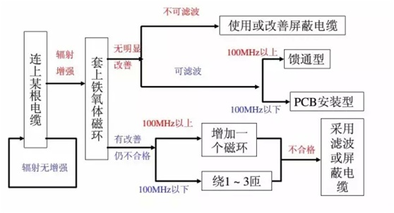

一、EMC整改意见：
1、在拿到整改意见书以后，需要提前定位好EMC整改计划。没有定位好计划就去盲目的整改产品就像无头的苍蝇一样到处乱动，这样只会增加整改的成本。
2、定位手段，对于这里小编觉得主要可以分为两点。第一：直觉判断，需要完全依托工程师的直觉和经验来进行判断。第二：比较测试，根据测试仪器所提供的数据来进行分析问题。
3、确定emc，受扰源（干扰源）干扰路径（受扰路径）。另外很多时候干扰路径和源头并不止一个，所以发现采取一定措施发现没有改善一般不要改回去，更不要放弃说不一定离成功就差那么一步。只有找到这这两点就能了解其中根本原因也能从根本上解决，往往只需要花费很少代价达到彻底解决问题的目的，达到四两拨千斤的效果。
下面的思路从一些方面帮你确定源头和路径，另外提供了一些解决方法，解决方法是次要的，了解前面两个因素后怎么解决都可以的。
二、EMC整改流程：
1、RE超标整改流程：

2、电线电缆超标整改流程：

3、信号电缆整改流程：

4、屏蔽体泄漏整改流程：
5 esd路径分析
上面这些流程图对于每个人，每个产品可能都不一样，最重要的平时要多积累，多总结，形成符合自己的整改方法和思路。如果还没有可以每次遇到问题就按照上面的流程把思路梳理一遍。
另外要养成记录的好习惯，记录的意思不是每次做一点更改就要记录下来，这样流水账效率很低，要记录重点，至少是有改进的地方一定要记录下来，注意拍照。最后在总结的时候看起来会很清晰。